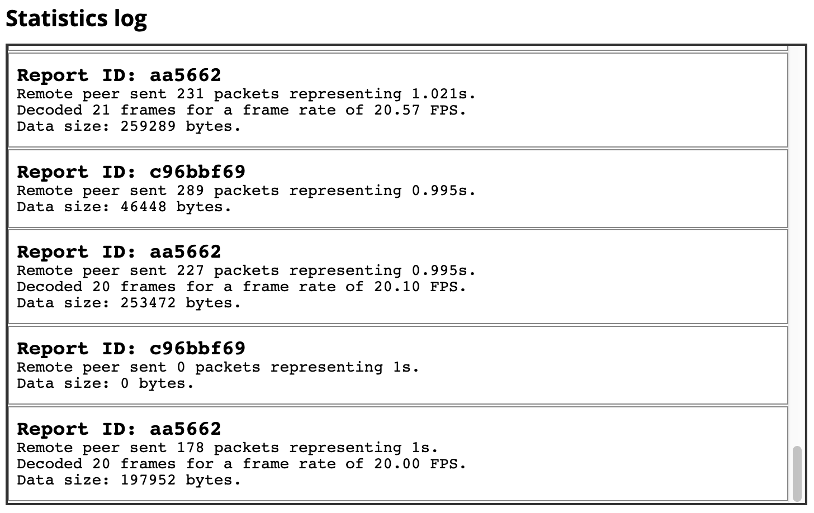

RTCRemoteOutboundRtpStreamStats.localId
The RTCRemoteOutboundRtpStreamStats
dictionary's localId property is a string which can be
used to identify the RTCInboundRtpStreamStats object whose
remoteId matches this value.
Together, these two objects provide statistics about the inbound and outbound sides of the same synchronization source (SSRC).
Value
A string which can be compared to the value of an
RTCInboundRtpStreamStats object's
remoteId property to see if the two
represent statistics for each of the two sides of the same set of data received by the
local peer.
Usage notes
You can think of the local and remote views of the same RTP stream as pairs, each of
which has a reference back to the other one. Thus, if an RTCStatsReport
includes an remote-outbound-rtp statistics object (of type
RTCRemoteOutboundRtpStreamStats), it should also have a corresponding
inbound-rtp object. Both of these provide information about the same batch
of packets being transmitted from the remote peer to the local device. The difference is
that remote-outbound-rtp describes statistics about the transmission(s)
from the perspective of the remote peer, while inbound-rtp offers
statistics about the incoming data from the local peer's perspective.
You can examine, try out, and experiment with this example on Glitch.
Examples
In this example, we have a pair of functions: the first,
networkTestStart(), captures an initial report, and the second,
networkTestStop(), captures a second report.
The second function uses the two reports to output some information about the network conditions.
networkTestStart()
This function calls the RTCPeerConnection method
getStats() to request an
RTCStatsReport and store it in the variable startReport.
let startReport;
async function networkTestStart(pc) {
if (pc) {
startReport = await pc.getStats();
}
}
Given an RTCPeerConnection, pc, this calls its
getStats() method to obtain a statistics
report object, which it stores in startReport for use once the end-of-test
data has been collected by networkTestStop().
networkTestStop()
The networkTestStop() function obtains a second report,
endReport, then computes and outputs the results.
Finding paired statistics
Each statistics record of type
remote-outbound-rtp (describing a remote peer's statistics about sending
data to the local peer) has a corresponding record of type inbound-rtp
which describes the local peer's perspective on the same data being moved between the
two peers. Let's create a utility function to help us look up the value of a key in the
paired statistics object.
The findReportEntry() function shown below examines
an RTCStatsReport, returning the RTCStats-based statistics
record which contains the specified key — and for which the key
has the specified value. If no match is found (or the statistics report has
no record corresponding to the statistics category indicated by key.
function findReportEntry(report, key, value) {
for (const stats of report.values()) {
if (stats[key] === value) {
return stats;
}
}
return null;
}
Since the RTCStatsReport is a JavaScript
Map,
we can iterate over the map's
values()
to examine each of the RTCStats-based statistics records in the report
until we find one that has the key property with the specified
value. When a match is found, the statistics object is returned.
If no match is found, the function returns null.
The main networkTestStop() function
Now let's look at the networkTestStop() function itself. It takes as input
the RTCPeerConnection being tested, calls getStats() to get
a new RTCStatsReport with current statistics, then computes the results
it's looking for, outputting those results as appropriate to the user by appending
appropriate HTML to the contents of the <div> element whose class is
stats-box.
async function networkTestStop(pc) {
if (pc) {
const statsBox = document.querySelector(".stats-box");
const endReport = await pc.getStats();
for (const endRemoteOutbound of endReport.values()) {
if (endRemoteOutbound.type === "remote-outbound-rtp") {
const startRemoteOutbound = startReport.get(endRemoteOutbound.id);
if (startRemoteOutbound) {
const startInboundStats = findReportEntry(startReport, "remoteId", startRemoteOutbound.id);
const endInboundStats = findReportEntry(endReport, "remoteId", endRemoteOutbound.id);
const elapsedTime = (endRemoteOutbound.timestamp - startRemoteOutbound.timestamp) / 1000; /* in seconds */
const packetsSent = endRemoteOutbound.packetsSent - startRemoteOutbound.packetsSent;
const bytesSent = endRemoteOutbound.bytesSent - startRemoteOutbound.bytesSent;
const framesDecoded = endInboundStats.framesDecoded - startInboundStats.framesDecoded;
const frameRate = framesDecoded / elapsedTime;
let timeString = "";
if (!isNaN(elapsedTime)) {
timeString = ` representing ${elapsedTime}s`;
}
let frameString = "";
if (!isNaN(framesDecoded)) {
frameString = `Decoded ${framesDecoded} frames for a frame rate of ${frameRate.toFixed(2)} FPS.<br>`;
}
const logEntry = `<div class="stats-entry"><h2>Report ID: ${endRemoteOutbound.id}</h2>` +
`Remote peer sent ${packetsSent} packets ${timeString}.<br>` +
`${frameString}` +
`Data size: ${bytesSent} bytes.</div>`;
statsBox.innerHTML += logEntry;
} else {
statsBox.innerHTML += `<div class="stats-error">Unable to find initial statistics for ID ${endRemoteOutbound.id}.</div>`;
}
}
statsBox.scrollTo(0, statsBox.scrollHeight);
}
}
}
Here's what's going on in the networkTestStop() function: after calling
the RTCPeerConnection method getStats() to get the latest statistics report for the connection and storing it in
endReport. This is an RTCStatsReport object, which maps
strings to objects of the
corresponding RTCStats-based type.
Now we can begin to process the results, starting with the ending statistics found in
endReport. In this case, we're looking for statistics records whose
type is remote-outbound-rtp, so we iterate over the entries in
the statistics report until we find an entry of that type. This object is, specifically,
of type RTCRemoteOutboundRtpStreamStats, and it provides statistics
giving details about the state of things from the perspective of the remote
peer. This statistics record is stored in endRemoteOutbound.
Once the ending remote-outbound-rtp record is found, we use
its id property to get its ID. WIth that in hand, we can
look up the remote-outbound-rtp record in the starting statistics record
(startReport), which we store into startRemoteOutbound.
Now we obtain the inbound-rtp statistics that correspond to these two
remote-outbound-rtp records by finding the remoteId property
within them whose value is the ID of the remote-outbound-rtp record. We use
the findReportEntry() function described in the previous section for that,
storing the located inbound-rtp records in startInboundStats
and endInboundStats.
Now we have all the raw statistics needed to calculate the information we want to display, so we do so:
-
We calculate the amount of time—
elapsedTime—that elapsed between the two reports being sent by subtracting thetimestampstartReportfrom that ofendReport. We then divide by 1000 to convert the result from milliseconds to seconds. -
We compute the number of packets sent during this
interval—
packetsSent—by subtracting the two reports' values for thepacketsSentproperty. -
Similarly, the number of bytes sent during this interval—
bytesSent—is calculated by subtracting the starting statistics object'sbytesSentproperty from that of the ending statistics. -
The number of frames decoded during this interval—
framesDecoded—is determined by subtractingstartRecord'sframesDecodedfromendRecord.framesDecoded. -
Finally, the frame rate over the elapsed time span is calculated by dividing
framesDecodedbyelapsedTime.
The remainder of the networkTestStop() function constructs the HTML used
to display the output of the collected and computed results to the user, then append it
to the element statsBox, which we're using to show the status updates to
the user.
The output log, given the styles used by the example, looks like this:

In the screenshot, we see a heading followed by the scrollable <div>
we refer to as statsBox. The box contains a number of log entries, the last
handful of which are visible. Each one represents approximately one second of time
(since that's much time we're waiting between calling networkTestStart()
and networkTestStop()).
Try it and fork it
Specifications
| Specification |
|---|
| Identifiers for WebRTC's Statistics API # dom-rtcremoteoutboundrtpstreamstats-localid |
Browser compatibility
| desktop | mobile | ||||||||||
|---|---|---|---|---|---|---|---|---|---|---|---|
localId | |||||||||||